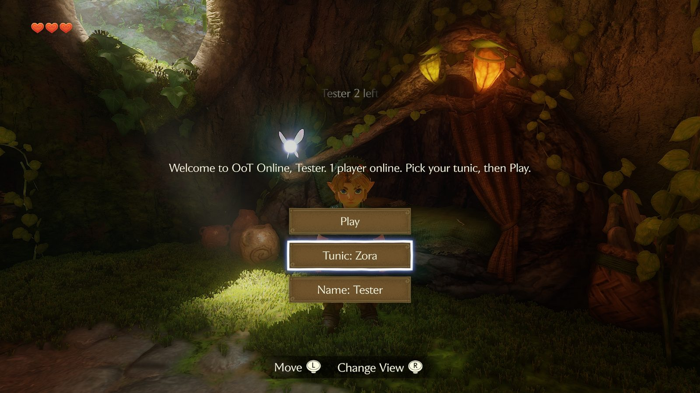
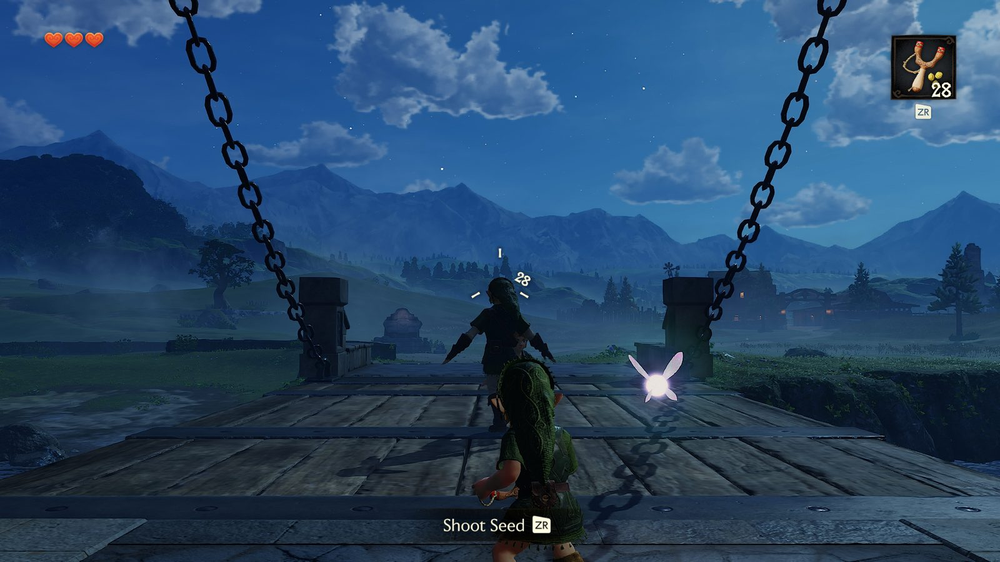
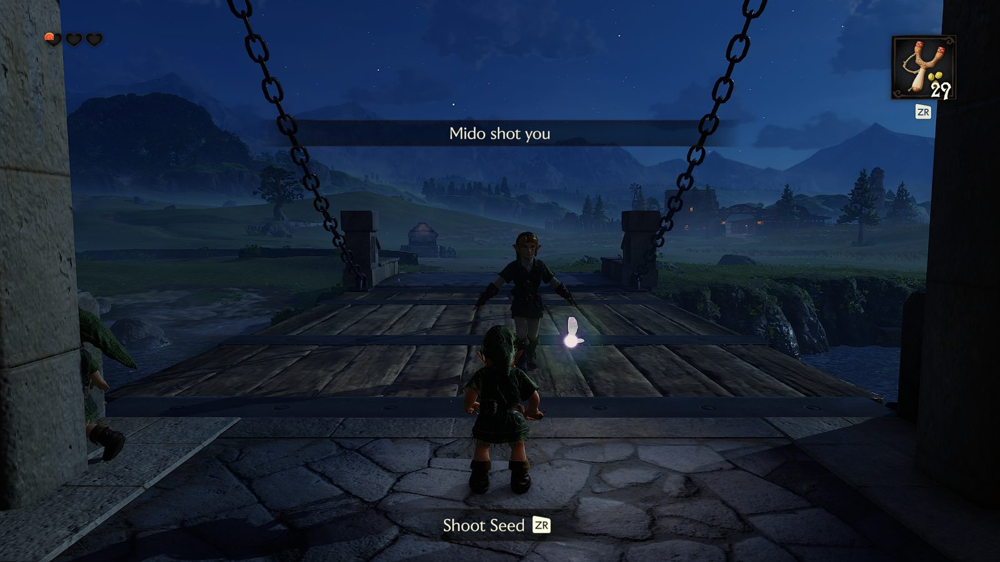

What it is
OoT Online puts everyone who plays into one Hyrule Field. It runs The Legend of Zelda: Ocarina of Time for Nintendo Switch 2 natively on Macs with an Apple chip, at 60 fps, and adds the other players: each one is a Link of their own age, walking and running with Link's own animations, with a Navi of their own. The lobby, the notices and the prompts are the game's own menus.



Get it
You need your own copy of the game. OoT Online contains nothing from it and downloads nothing from it:
it builds the game from your own dump (a .nup of Ocarina of Time from your own Switch 2), on your Mac.
You need a Mac with an Apple chip (M1 or later), macOS 26.6 or later, and about 60 GB free. Nothing else: no Xcode, no Homebrew, no Terminal.
- Open Install OoT Online from your Downloads (if your browser left it as a zip, double-click the zip first).
- The first time, macOS says it cannot check the app for malicious software: it is a free fan project, not signed by Apple. Click Done, then open System Settings → Privacy & Security, scroll down, click Open Anyway next to "Install OoT Online" and confirm. This happens once.
- Click Choose your game file…, pick your
.nup, then Build Ocarina of Time Online. If macOS asks whether it may access the folder your game file is in (your Downloads, say), click Allow.
The installer builds Ocarina of Time Online into the Applications folder in your home folder. The first build takes one to three hours (it translates and compiles about 43,000 of the game's shaders for your Mac) and happens once; your Mac stays awake meanwhile. To update later, open the installer again: it reuses what it built and takes minutes. On macOS 26 it may ask your password to install Rosetta, Apple's helper for Intel code, which one of its tools needs.
Play
Open Ocarina of Time Online. Load your save, or start a New Game: online, a new game skips the opening and puts you in Hyrule Field a few seconds later.
When Link is in the world the lobby comes up. Play takes you to the meeting place in front of the Castle Town drawbridge.
- ZR hold to aim, let go to shoot (young Link: the slingshot; adult Link: the bow).
- T chat. / commands:
/who,/w name text,/me,/stats,/lobby. - Tunic: Kokiri, Goron or Zora, picked in the lobby (adult Link shows it).
Your save is safe
Online, the app plays on a fresh copy of your save, made every time it starts. Nothing you do online reaches your real save, and the copy is never synced to the cloud. Play the story as always: start the plain game.
Run your own server
The server is a single Node.js program with no dependencies. On a small Linux box: zsh deploy/push.sh
root@<address> from the repository installs it as a service. Friends only: --code SOMEWORD.
Point the installer at it: Options, then its address (<address>:4697).
Everything is on GitHub.